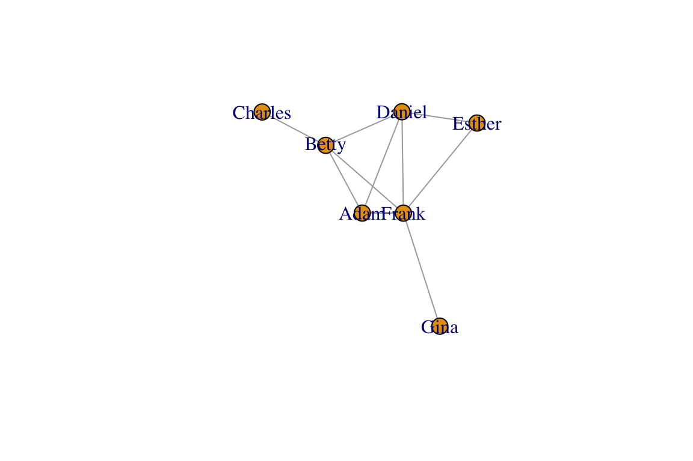
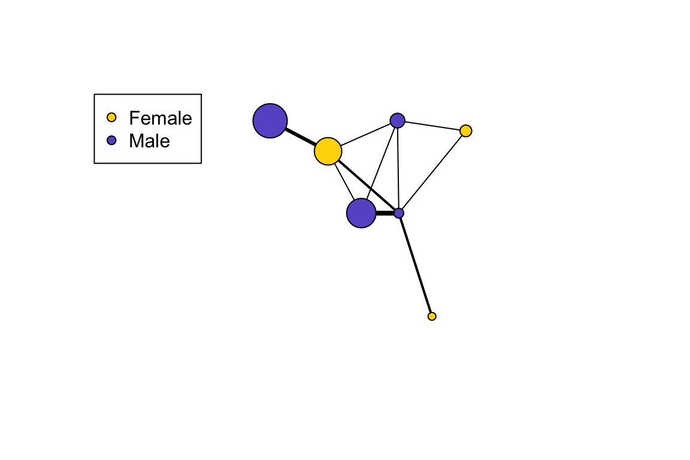

Researchers often use network analysis as a tool for displaying complex data. But you should also know that one must be very careful not to over-interpret network plots. This is because there is no single rule for how to display networks, and network plots can obscure interesting patterns or be misleading if the layout format does not match the purpose. With that said, network plots can be a useful and powerful way to get your message across if used appropriately.
The plotting function in igraph comes with a lot of different options. We have used several arguments already, but if you want to explore the ins and outs of plotting in R, look up ?igraph.plotting. I also highly recommend my favorite web tutorial on static and dynamic network visualization by Katya Ognyanova. This site is going to cover the very basics, but I highly recommend her site when you feel ready to do more.
Here, we will deal with two main topics: (1) layout functions and how to merge network data and (2) attribute data to illustrate the network.
Let’s start where we left of Lesson 2 and make a network out of a fictional adjacency matrix:
library(igraph)
am=as.matrix(read.csv("https://dshizuka.github.io/networkanalysis/SampleData/sample_adjmatrix.csv", header=T, row.names=1))
am## Adam Betty Charles Daniel Esther Frank Gina
## Adam 0 1 0 1 0 4 0
## Betty 1 0 3 1 0 2 0
## Charles 0 3 0 0 0 0 0
## Daniel 1 1 0 0 1 1 0
## Esther 0 0 0 1 0 1 0
## Frank 4 2 0 1 1 0 2
## Gina 0 0 0 0 0 2 0g=graph_from_adjacency_matrix(am, mode="undirected", weighted=T)
plot(g, edge.width=E(g)$weight)There are several graph layout functions in igraph. You can use these layout functions inside the plot() function, or you can specify the layout as a separate two-column matrix. For example, let’s say you want to arrange the network as a circle:
#option 1
plot(g, layout=layout_in_circle(g))
#option 2:
l=layout_in_circle(g)
plot(g, layout=l)class(l) ## [1] "matrix"l## [,1] [,2]
## [1,] 1.0000000 0.0000000
## [2,] 0.6234898 0.7818315
## [3,] -0.2225209 0.9749279
## [4,] -0.9009689 0.4338837
## [5,] -0.9009689 -0.4338837
## [6,] -0.2225209 -0.9749279
## [7,] 0.6234898 -0.7818315You can see that the object l is a two-column matrix of x- and y-coordinates. So this is what the layout functions create, and the plotting functions uses these coordinates to place the nodes. Now let’s learn a little bit about the different types of layout functions.
Networks are generally plotted using a force-directed algorithm, which is a class of algorithms for drawing graphs. The default function in igraph is called the Fruchterman-Reingold (1991) algorithm. Typically, force-directed algorithms use a physical simulation where some kind of attractive force (imagine a spring) are used to attract nodes connected by edges together. So ‘tightly’ connected clusters of nodes will show up close to each other, and those that are ‘loosely’ connected will be repulsed towards the outside. However, the algorithm does not specify where any node has to be other than these constraints. Therefore, every time you run the plot() command, you will get a slightly different configuration of the graph. Let’s try plotting the network with the default Fruchterman-Reingold algorithm. Run this line of code several times:
plot(g, layout=layout_with_fr(g))You will observe that each time you plot the graph, you get a different configuration. They all follow the same algorithm, but they turn out differently because the algorithm is simulating a stochastic process of forces acting on nodes. In order to create reproducible layouts, you can use the set.seed() function when setting up the layout.
set.seed(10)
l=layout_with_fr(g)
plot(g, layout=l)
Now, your plot should be reproducible when you run the plotting function again. Other popular force-directed algorithms include Kamada & Kawai (1989) and Davidson & Harel (1996), and “GEM” (Frick et al. 1995). They all have slightly different properties and there is no single ‘best method’. Below, we will plot the same network in 8 different ways. The top row will be force-directed methods, and the bottom row will be static methods:
set.seed(10)
layouts = c("layout_with_fr", "layout_with_kk", "layout_with_dh", "layout_with_gem", "layout_as_star", "layout_as_tree", "layout_in_circle", "layout_on_grid")
par(mfrow=c(2,4), mar=c(1,1,1,1))
for(layout in layouts){
l=do.call(layout, list(g))
plot(g, layout=l, edge.color="black", vertex.label="", main=layout)
}Before we move on, let’s clear the plotting region:
dev.off()## null device
## 1You can also use custom layouts. I’ll set up the vertices on a line and then used curved edges.
l=matrix(c(1,2,3,4,5,6,7, 1,2,3,4,5,6,7),ncol=2)
plot(g,layout=l,edge.curved=TRUE, vertex.label="")The ability to control the layout is particularly useful when we want to plot spatial networks, as we will see later.
Now that we know a bit about how to change the looks of vertices and edges, we are ready to start adding information to our edges. For example, you might have other information about your vertices that you’d like to display in the graph plot: e.g., traits of individuals in a social network, or the attributes of a species in a network of species interactions. Typically, you would store these “node attributes” in a separate file. We will use a sample “attributes file” called sample_attrib.csv. Let’s go ahead and import this file:
attrib=read.csv("https://dshizuka.github.io/networkanalysis/SampleData/sample_attrib.csv")
attrib## Name Sex Age
## 1 Adam M 30
## 2 Gina F 8
## 3 Charles M 35
## 4 Daniel M 15
## 5 Frank M 10
## 6 Betty F 28
## 7 Esther F 12Now, the goal is to incorporate these vertex attributes, Sex and Age, to the graph object. Note that I have made this data NOT alphabetized on purpose. Therefore, the vertex number and the row numbers of this attributes file do not line up correctly. So we have to first sort these attributes so that we assign the correct attribute to the correct vertex. We can do this by using the match() function.
V(g)$sex=factor(attrib[match(V(g)$name, attrib$Name), "Sex"]) # factor() preserves data as M/F
V(g)$age=attrib[match(V(g)$name, attrib$Name), "Age"]
g## IGRAPH 49368a9 UNW- 7 10 --
## + attr: name (v/c), sex (v/n), age (v/n), weight (e/n)
## + edges from 49368a9 (vertex names):
## [1] Adam --Betty Adam --Daniel Adam --Frank Betty --Charles
## [5] Betty --Daniel Betty --Frank Daniel--Esther Daniel--Frank
## [9] Esther--Frank Frank --GinaThe trick now is to assign colors to each sex. Here, let’s assign males and females to different colors. Here’s one way to do it:
V(g)$color=c("gold","slateblue")[as.numeric(V(g)$sex)]This line of code converts the sex to numbers by alphabetical order, i.e., 1 = female and 2 = male. Now let’s plot the network with node colors as sex and node size as age and add a legend for the node colors:
set.seed(10)
l=layout_with_fr(g)
plot(g, layout=l,vertex.label="", vertex.size=V(g)$age, edge.width=E(g)$weight, edge.color="black")
legend("topleft", legend=c("Female", "Male"), pch=21, pt.bg=c("gold", "slateblue"))